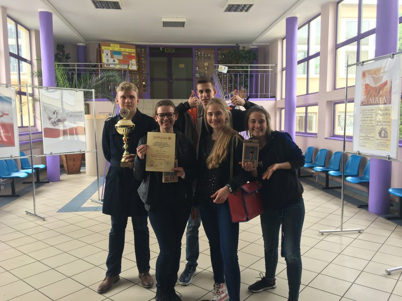

Gazeta ZSO nr II w Opolu
Numer 4/2017
Podwójne złoto dla Dwójki

W sobotę 6 maja osiem drużyn, sześć reprezentujących szkoły ponadgimnazjalne i dwie gimnazjalne stanęło w szranki w etapie rejonowym Mistrzostw Pierwszej Pomocy PCK. W jubileuszowej edycji zawodów, które odbyły się już po raz 25., zwyciężył zespół z Publicznego Liceum Ogólnokształcącego Nr II w Opolu, a w kategorii gimnazjów - gimnazjum nr 10. I będą reprezentować nasze miasto w etapie okręgowym mistrzostw.
Zdaniem Pawła Czudaja, kapitana reprezentacji, zawody często kojarzą się z rywalizacją i nagrodami, jednak w mistrzostwach pierwszej pomocy chodzi o jeszcze coś innego. - Oczywiście niezmiernie miło jest otrzymywać laury za już posiadaną wiedzę, ale tak naprawdę to chodzi o samodoskonalenie się oraz świadomość, że gdy drugi człowiek będzie potrzebował pomocy, to my potrafimy jej udzielić, to jest prawdziwa nagroda – tłumaczy Paweł. I dodaje: - sobotni sukces zawdzięczamy naszym mentorom, w tym starszym koleżankom i kolegom, którzy szkolili nas w ramach zajęć Szkolnej Grupy Ratowniczej. Od pewnego czasu to my przejęliśmy to zadanie, czego efektem jest sukces naszych gimnazjalistów. Uważam że tradycja ratownicza w naszej szkole jest jedną z najbardziej zakorzenionych.
Reprezentacje „Dwójki” i „Dziesiątki” czeka teraz etap okręgowy podczas którego zmierzą się z najlepszymi drużynami z całego województwa.
ul. Pułaskiego 3
45-048 Opole
tel. 077 45 422 86
fax 077 02 18 87
e-mail:
bez.tytulu@o2.pl
Ola Orłowska
DTP
Michał Woś
Opiekun
mgr Lucyna Rudnik
Ola Orłowska, Ania Cichy, Dagmara Cioska, Julia Nowicka, Julia Marcinów, Hania Szarzewicz, Michał Woś, Bartek Lipnicki, Jonasz Mularz, Paweł Kubacki, Mateusz Pietruszyński, Mateusz Orlik